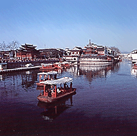

Wangjianshuo's blog
Events (in Shanghai) that affect my life (and others')
Home |
Directory |
Photo |
Map |
Random | About me
Travel from Shanghai to Nanjing
See also: Shanghai home
| Taxi |
Business |
Local Time | Travel to
Nanjing | My
Favorite
Restaurants,
Taxi

Nanjing is another beautiful, historical and modern city near Shanghai - besides
Hang Zhou and Su Zhou. If you live in Shanghai, you'd better take two days
visiting Nanjing. You will find the trip very interesting.
I just returned from my Nanjing trip and would like to post travel tips. The
information is current at least on March 3, 2002.
What is the best way to go there? Do I need to go by air? Certainly not. It is
only 2:48 mins by train.
You can try T714, the train from Shanghai to Nanjing West Station. It leaves
Shanghai at 8:00 AM and arrives at 10:48 AM in Nanjing Station. There are some
classes of ticket. The best seat possible is Te Deng (The premium seat). It is
about 129 RMB (not sure of the exact number) There are only three very large and
comfort seats per row while standard rows have 5 seats. The "first class" seat
is also good, the seats are the same as that on a plane. It price is 86 RMB now
(Yes. I am sure of the exact price). It is also good.
In Nanjing, the Hotel I like most is Hilton. The service there is among the best
I have ever experienced.
Have a good trip in Nanjing.
Buy XenicalBuy Xanax Buy Phentermine mp3 players Buy Phentermine mp3 player Buy Cheap Phentermine Penis Enlargement Cialis Buy Cialis